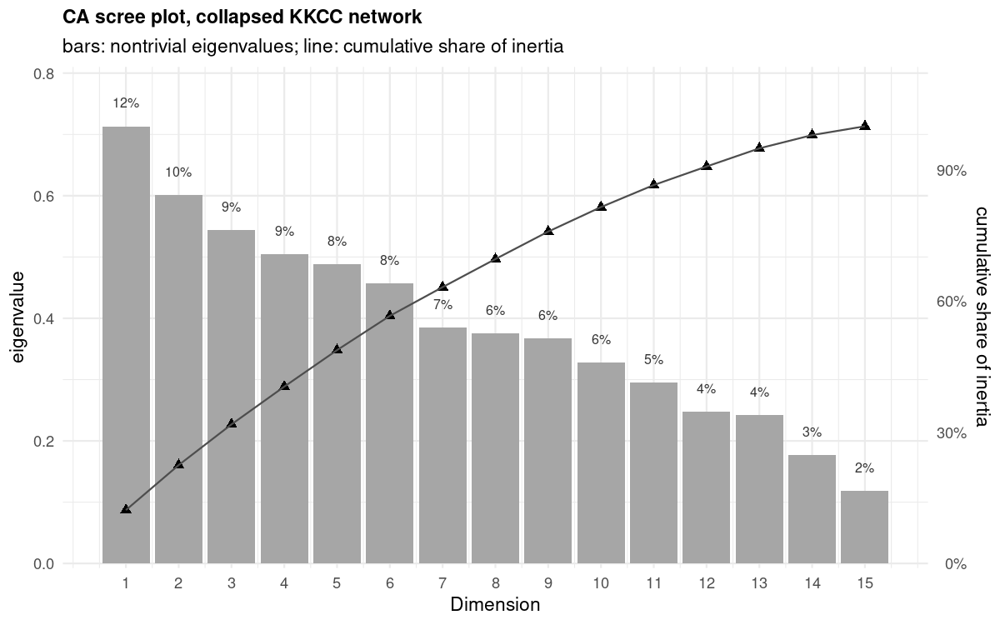
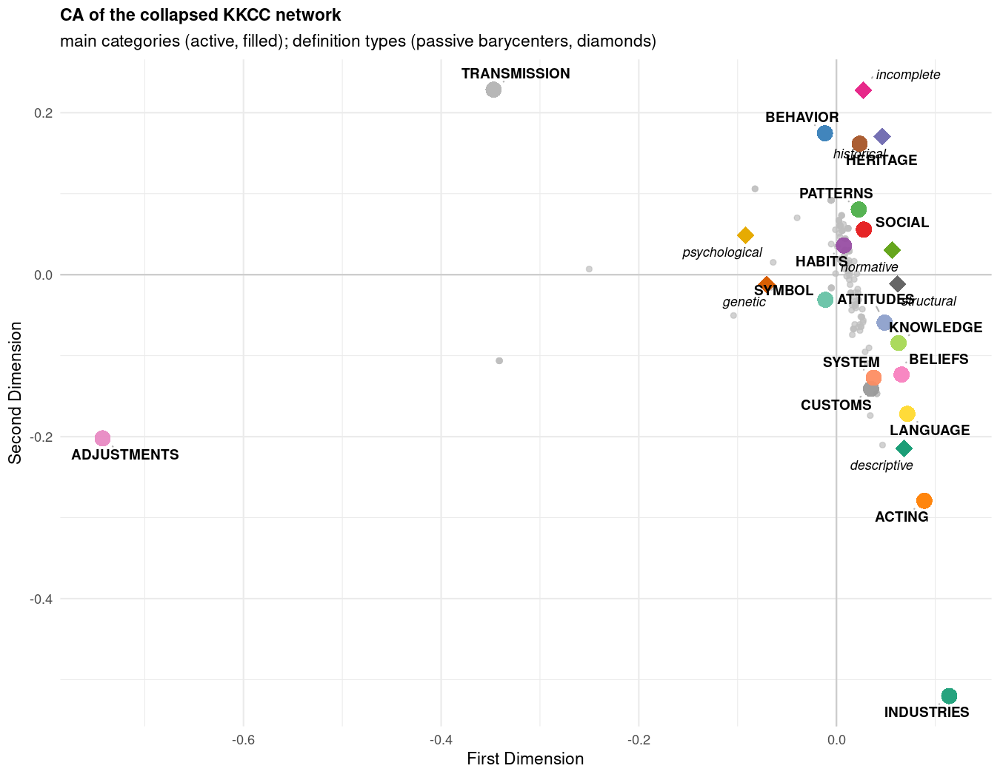
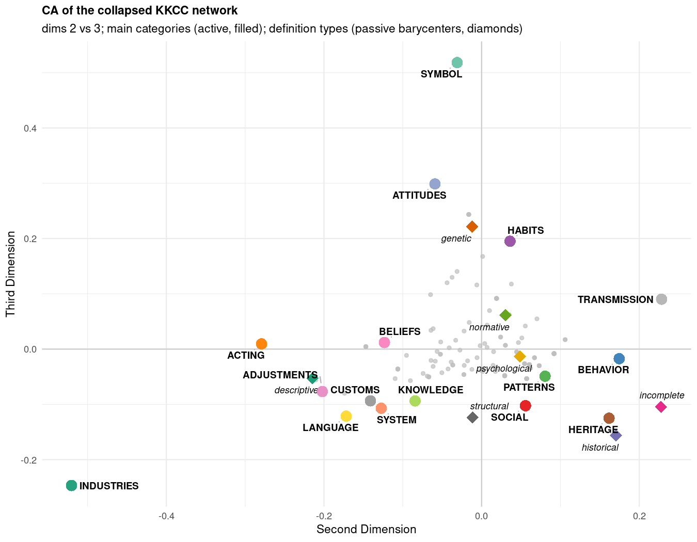
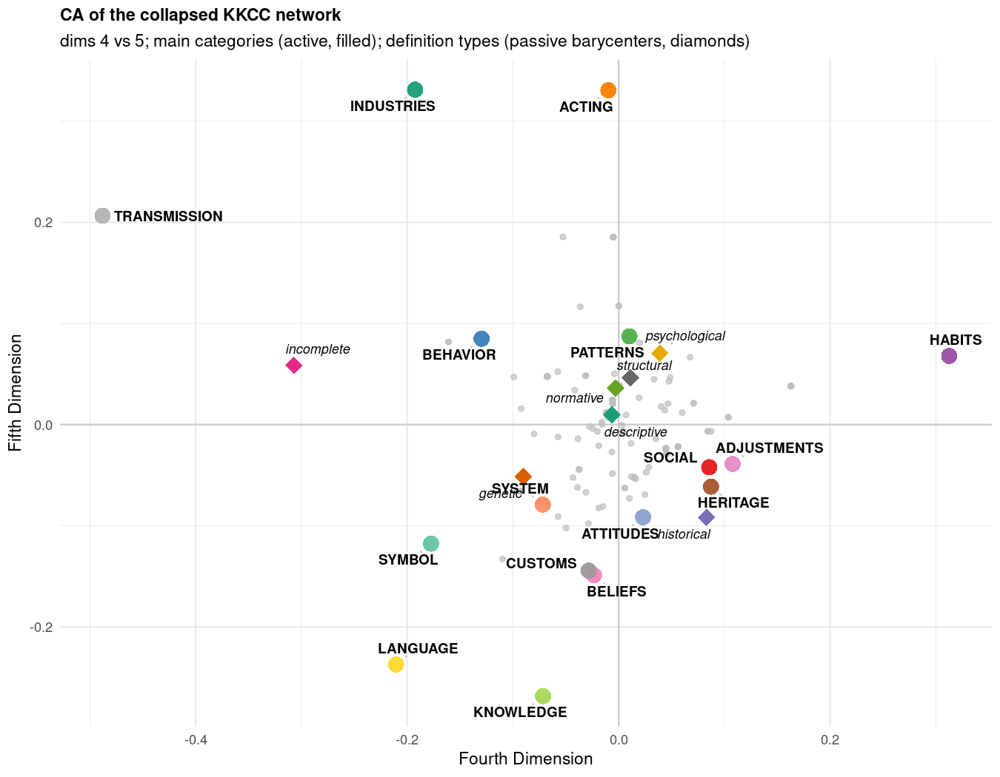
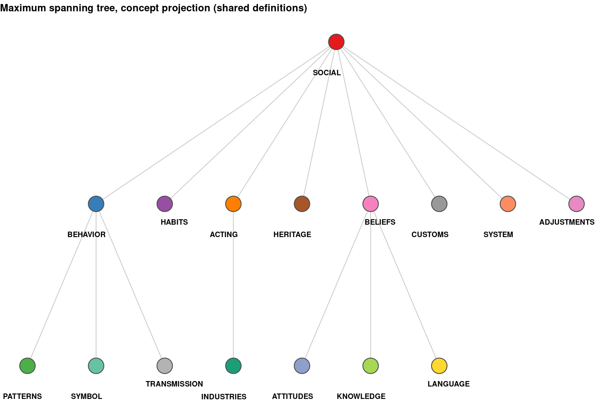
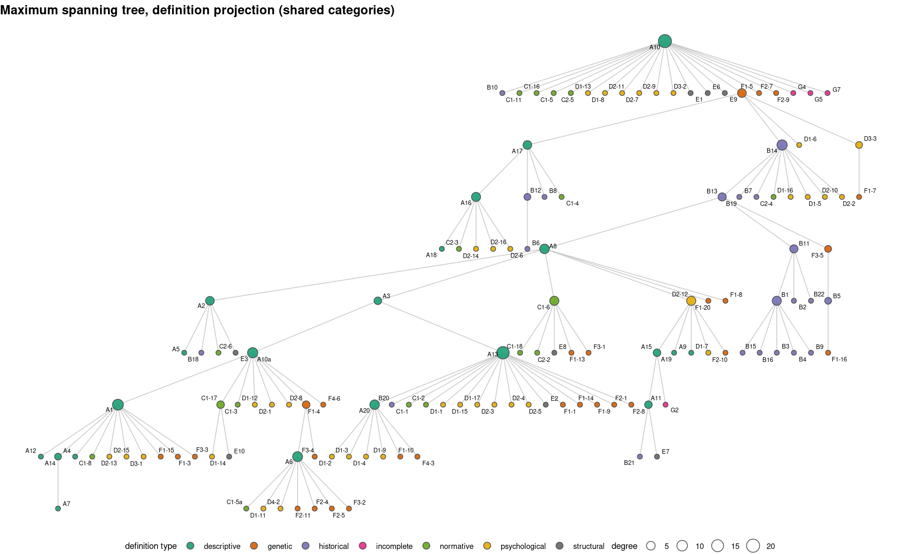
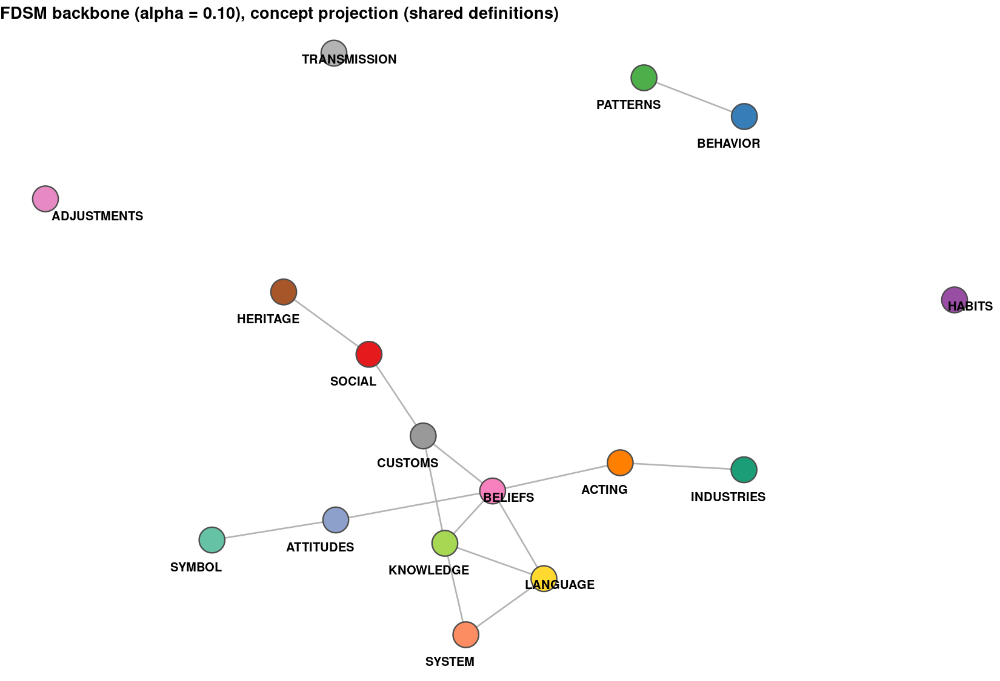
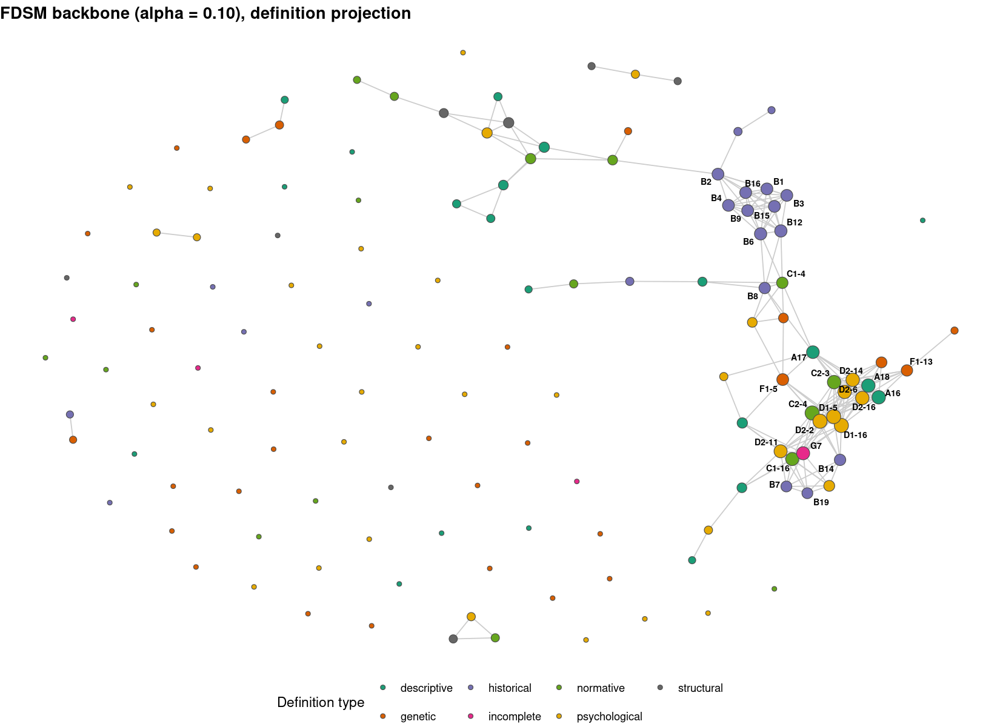

library(igraph)
Attaching package: 'igraph'The following objects are masked from 'package:stats':
decompose, spectrumThe following object is masked from 'package:base':
unionThis report was generated using AI under general human direction. At the time of generation, the contents have not been comprehensively reviewed by a human analyst.
This report computes basic network statistics for the two-mode network of culture concepts and culture definitions extracted from Table 2 of Boroch’s classification of the Kroeber–Kluckhohn Culture Concepts (KKCC). The rows are the 16 main concept categories of the KKCC scheme — auxiliary notions have been collapsed into their parents (union of ties, binarized) — and the columns are 135 definition codes. Statistics follow the conventions of the two-mode basics tutorial.
library(igraph)
Attaching package: 'igraph'The following objects are masked from 'package:stats':
decompose, spectrumThe following object is masked from 'package:base':
uniond <- readRDS("data/kkcc_two_mode_main.rds")
A <- d$biadjacency # main categories (rows) x definitions (columns)
g <- d$graph # attributed bipartite graph
def_attrs <- readRDS("data/kkcc_two_mode.rds")$def_attrs
bb <- read.csv("data/kkcc-supplement-bibliography.csv") # supplement bibliography
db <- read.csv("data/kkcc-definition-biblio.csv") # code -> bibliography entryA common mistake is to report vcount(g), which pools both modes. Counting each mode separately from the bipartite mapping:
n.concepts <- vcount(subgraph(g, V(g)$type == FALSE))
n.defs <- vcount(subgraph(g, V(g)$type == TRUE))
c(concepts = n.concepts, definitions = n.defs) concepts definitions
16 135 The edge count matches the number of 1s in the biadjacency matrix:
sum(A)[1] 301ecount(g)[1] 301Density is the share of possible concept–definition ties that are present:
dens <- sum(A) / (nrow(A) * ncol(A))
round(dens, 4)[1] 0.1394Degrees in the two modes count different things: a concept’s degree is the number of definitions using it, and a definition’s degree is the number of concepts it expresses.
deg.p <- rowSums(A)
deg.g <- colSums(A)
c(mean.deg.p = round(mean(deg.p), 2), mean.deg.g = round(mean(deg.g), 2),
min.deg.p = min(deg.p), min.deg.g = min(deg.g),
max.deg.p = max(deg.p), max.deg.g = max(deg.g))mean.deg.p mean.deg.g min.deg.p min.deg.g max.deg.p max.deg.g
18.81 2.23 3.00 1.00 58.00 6.00 Both degree sums equal the edge count, as they must:
c(rowSums = sum(deg.p), colSums = sum(deg.g), edges = sum(A))rowSums colSums edges
301 301 301 Degrees vary sharply by definition type and by concept status (main category vs auxiliary notion):
tapply(deg.g, def_attrs$type[match(names(deg.g), def_attrs$code)],
function(x) round(mean(x), 2)) descriptive genetic historical incomplete normative
3.05 2.04 2.52 1.25 2.29
psychological structural
1.86 2.00 Raw degree centrality is rowSums(A) and colSums(A). Normalized by the size of the opposite mode:
round(deg.p / ncol(A), 3)[1:10] SOCIAL BEHAVIOR PATTERNS HABITS ACTING HERITAGE BELIEFS CUSTOMS
0.430 0.370 0.193 0.185 0.148 0.119 0.141 0.126
SYMBOL SYSTEM
0.104 0.104 round(deg.g / nrow(A), 3)[1:10] A1 A10 A10a A11 A12 A13 A14 A15 A16 A17
0.250 0.188 0.188 0.062 0.125 0.188 0.188 0.250 0.125 0.188 The most central nodes in each mode:
head(data.frame(concept = names(deg.p), degree = deg.p)[order(-deg.p), ], 10) concept degree
SOCIAL SOCIAL 58
BEHAVIOR BEHAVIOR 50
PATTERNS PATTERNS 26
HABITS HABITS 25
ACTING ACTING 20
BELIEFS BELIEFS 19
CUSTOMS CUSTOMS 17
HERITAGE HERITAGE 16
SYMBOL SYMBOL 14
SYSTEM SYSTEM 14head(data.frame(code = names(deg.g), degree = deg.g,
type = def_attrs$type[match(names(deg.g), def_attrs$code)])[order(-deg.g), ], 10) code degree type
A8 A8 6 descriptive
C1-6 C1-6 6 normative
D2-12 D2-12 6 psychological
A2 A2 5 descriptive
B13 B13 5 historical
D1-6 D1-6 5 psychological
F1-5 F1-5 5 genetic
A1 A1 4 descriptive
A15 A15 4 descriptive
A3 A3 4 descriptiveFor a concept, the average nearest-neighbor degree is the mean degree of the definitions that use it; for a definition, it is the mean degree of the concepts it expresses.
knn.p <- rowSums(A * rep(colSums(A), each = nrow(A))) / rowSums(A)
knn.g <- as.numeric(t(A) %*% deg.p) / colSums(A)
round(mean(knn.p), 2)[1] 3.06round(mean(knn.g), 2)[1] 32.16The degree correlation relates each node’s degree to the average degree of its opposite-mode neighbors. Positive values indicate assortativity and negative values disassortativity across the two modes.
tm.deg.corr <- function(A) {
knn.p <- as.numeric(rowSums(A * rep(colSums(A), each = nrow(A))) / rowSums(A))
knn.g <- as.numeric(t(A) %*% rowSums(A)) / colSums(A)
list(r = cor(c(rowSums(A), colSums(A)), c(knn.p, knn.g)))
}
round(tm.deg.corr(A)$r, 4)[1] -0.4206Structural checks confirm the bipartite structure captured in the graph object:
is_bipartite(g)[1] TRUEis_directed(g)[1] FALSEall(bipartite_mapping(g)$type == V(g)$type)[1] TRUEModularity with communities defined by node type attains the low value characteristic of a bipartite graph, since all edges run between the two types and none within:
V(g)$comm <- as.numeric(V(g)$type) + 1
round(modularity(g, V(g)$comm), 4)[1] -0.5An addition beyond the basic tutorial, but important for interpretation: the KKCC two-mode network is not connected.
comp <- components(g)
table(comp$csize)
151
1 The collapsed network is connected: it has 1 component(s), with the largest containing 151 of the 151 nodes.
Correspondence analysis of the collapsed biadjacency matrix follows the two-mode CA tutorial: row and column profile operators are built from the biadjacency matrix, decomposed with eigen(), the trivial first dimension (eigenvalue 1) is dropped, and definition scores are sign-aligned to concept scores via the duality relation. Definition types enter as passive supplementary points, located at the mass-weighted barycenter of their member definitions.
# runs the full CA + MST pipeline; also writes CA score CSVs and figures
source("analysis-ca-mst-main.R")trivial eigen-dims: 1
duality check passed (r > 0.999)Warning: Use of `df.scree$lambda` is discouraged.
ℹ Use `lambda` instead.
Use of `df.scree$lambda` is discouraged.
ℹ Use `lambda` instead.2-core: 16 x 86 edges: 252 concept MST edges: 15 of 15 possible
definition MST edges: 134 of 134 possiblefigures written to figures/The first non-trivial dimension accounts for 12% of the inertia and the first five for 49%:

In the dim 1–2 map, TRANSMISSION, ADJUSTMENTS, and INDUSTRIES sit far from the remaining categories, which cluster near the origin; the passive type barycenters separate most cleanly on dimensions 2–3 and 4–5.



Each mode’s one-mode projection is binarized (tie = at least one shared definition in the opposite mode) and reduced to its maximum spanning tree (Kruskal’s algorithm on tie multiplicity, implemented in make.max.st()), which keeps the strongest 15 ties per node set while dropping redundant weaker ones.

In the concept tree, SOCIAL is the root hub, linking to BEHAVIOR, HABITS, ACTING, HERITAGE, BELIEFS, CUSTOMS, SYSTEM, and ADJUSTMENTS; BELIEFS and BEHAVIOR act as secondary hubs for KNOWLEDGE/LANGUAGE/ATTITUDES and for PATTERNS/SYMBOL/TRANSMISSION respectively.

Instead of a hard multiplicity threshold, the weighted projections (tie weight = number of shared definitions) are binarized statistically: an edge is retained only if its weight is significantly stronger than expected under the Fixed Degree Sequence Model (FDSM), tested with 10,000 Fastball permutations at alpha = 0.10 (one-tailed), via the backbone package (Neal 2022, PLOS One). FDSM was chosen over the default SDSM after model comparison: on this small, sparse network SDSM retains almost nothing (2 concept edges, 0 definition edges at alpha = 0.05).
invisible(capture.output(source("analysis-backbone-main.R"))) ____ backbone v3.0.4| _ \ Cite: Neal, Z. P. (2026). backbone: An R package to extract network backbones.|#|_) | PLOS One, 21, e0349258. https://doi.org/10.1371/journal.pone.0349258|# _ < |#|_) | Help: type vignette("backbone"); email zpneal@msu.edu; github zpneal/backbone|____/ Beta: type devtools::install_github("zpneal/backbone", ref = "devel")Constructing edges' Monte Carlo p-values
Constructing edges' Monte Carlo p-valuesrbind(concept = sumry(P.p, bb.p), definition = sumry(P.g, bb.g)) edges_projection density_projection edges_backbone density_backbone
concept 86 0.7166667 14 0.11666667
definition 3740 0.4134881 199 0.02200111
max_weight
concept 19
definition 4The backbone keeps 14 of the 86 concept-projection ties and 199 of the 3740 definition-projection ties. FDSM p-values are Monte Carlo estimates, so exact counts can vary slightly between runs.


Degree was covered above; here we add the other two of the big three, following the two-mode normalizations of Borgatti and Everett (1997) [@borgatti_everett97]. Geodesic distances in two-mode networks are always even within a set and odd across sets. For closeness, each node set is normalized by its own theoretical maximum: N + 2(M−1) for concepts and M + 2(N−1) for definitions (igraph’s one-mode n−1 normalization would give non-sense here). For betweenness, the normalizations depend on which set is larger; since the definitions are the larger set here (135 vs 16), the formulas are swapped relative to the tutorial’s Southern Women example. Betweenness is reported as percentages.
invisible(capture.output(source("analysis-centrality-prestige-main.R")))cen.con[order(-cen.con$closeness), c("node", "k", "closeness", "betweenness.pct")] node k closeness betweenness.pct
SOCIAL SOCIAL 58 0.5140 39.728
BEHAVIOR BEHAVIOR 50 0.4896 33.683
PATTERNS PATTERNS 26 0.4264 9.031
HABITS HABITS 25 0.4198 13.941
CUSTOMS CUSTOMS 17 0.4094 5.947
SYMBOL SYMBOL 14 0.4015 7.695
SYSTEM SYSTEM 14 0.4015 6.376
ACTING ACTING 20 0.3976 10.921
BELIEFS BELIEFS 19 0.3976 5.176
ATTITUDES ATTITUDES 11 0.3776 3.233
HERITAGE HERITAGE 16 0.3691 2.431
ADJUSTMENTS ADJUSTMENTS 9 0.3691 7.745
LANGUAGE LANGUAGE 7 0.3595 1.899
KNOWLEDGE KNOWLEDGE 8 0.3579 0.812
INDUSTRIES INDUSTRIES 3 0.3016 0.216
TRANSMISSION TRANSMISSION 4 0.2900 0.436head(cen.def[order(-cen.def$closeness), c("node", "k", "type", "closeness", "betweenness.pct")], 15) node k type closeness betweenness.pct
A8 A8 6 descriptive 0.8208 11.906
C1-6 C1-6 6 normative 0.8114 10.831
F1-5 F1-5 5 genetic 0.8068 15.016
C2-2 C2-2 4 normative 0.7594 4.477
A17 A17 3 descriptive 0.7553 3.576
B13 B13 5 historical 0.7396 4.364
F1-13 F1-13 3 genetic 0.7396 4.214
B14 B14 4 historical 0.7320 2.491
F1-20 F1-20 3 genetic 0.7320 2.958
D1-6 D1-6 5 psychological 0.7282 14.051
C2-4 C2-4 3 normative 0.7282 1.782
D1-16 D1-16 3 psychological 0.7282 1.782
D1-5 D1-5 3 psychological 0.7282 1.782
D2-2 D2-2 3 psychological 0.7282 1.782
A16 A16 2 descriptive 0.7030 1.040SOCIAL and BEHAVIOR dominate both measures, as they dominate degree; the betweenness percentages are far more concentrated than the closeness scores, and a few low-degree definitions (e.g., F1-5, D1-6) achieve comparatively high betweenness by bridging categories that share few definitions.
Following the status/prestige tutorial, we score both modes with the two-mode HITS-style power iteration tm.status(A, t(A)) (Bonacich 1991; biHITS in Liao et al. 2014). The script verifies that the same scores emerge from the dual-projection approach (status1 on the Breiger projections), from the leading singular vectors of A, from the leading eigenvectors of both projections, and from the Faust (1997) duality relation (each node’s score is the weighted sum of the other mode’s scores, weight 1/sqrt(λ)). Three PageRank-family refinements follow, each changing who gets how many status points to distribute: two-mode PageRank (co-HITS, degree-normalized), double-normalized PageRank (BGRM, Rui et al. 2007), and square-root normalized BiRank (He et al. 2016). Scores are divided by their maximum for display, so the top node equals 1.000.
con.tab concept k hits pr bgrm birank
1 SOCIAL 58 1.000 1.000 0.006 1.000
2 BEHAVIOR 50 0.799 0.862 0.020 0.928
3 PATTERNS 26 0.446 0.448 0.004 0.670
4 HABITS 25 0.281 0.431 0.007 0.657
5 ACTING 20 0.183 0.345 0.002 0.587
6 BELIEFS 19 0.254 0.328 0.001 0.572
7 CUSTOMS 17 0.258 0.293 0.013 0.541
8 HERITAGE 16 0.267 0.276 0.007 0.525
9 SYMBOL 14 0.128 0.241 0.017 0.491
10 SYSTEM 14 0.170 0.241 0.007 0.491
11 ATTITUDES 11 0.121 0.190 0.001 0.435
12 ADJUSTMENTS 9 0.062 0.155 1.000 0.394
13 KNOWLEDGE 8 0.117 0.138 0.001 0.371
14 LANGUAGE 7 0.082 0.121 0.002 0.347
15 TRANSMISSION 4 0.032 0.069 0.370 0.263
16 INDUSTRIES 3 0.021 0.052 0.009 0.227head(def.tab, 15) code k type hits pr bgrm birank
1 A8 6 descriptive 0.968 1.000 0.003 1.000
2 C1-6 6 normative 1.000 1.000 0.004 1.000
3 D2-12 6 psychological 0.679 1.000 0.002 1.000
4 A2 5 descriptive 0.529 0.833 0.007 0.913
5 B13 5 historical 0.887 0.833 0.003 0.913
6 D1-6 5 psychological 0.523 0.833 0.204 0.913
7 F1-5 5 genetic 0.940 0.833 0.202 0.913
8 A1 4 descriptive 0.331 0.667 0.003 0.816
9 A15 4 descriptive 0.228 0.667 0.004 0.816
10 A3 4 descriptive 0.616 0.667 0.002 0.816
11 A6 4 descriptive 0.259 0.667 0.004 0.816
12 B11 4 historical 0.595 0.667 0.002 0.816
13 B14 4 historical 0.912 0.667 0.002 0.816
14 B22 4 historical 0.528 0.667 0.001 0.816
15 C2-2 4 normative 0.791 0.667 0.003 0.816Under Bonacich prestige (hits) and PageRank (pr), rankings track degree almost mechanically: SOCIAL and BEHAVIOR lead the concepts, and the highest-degree definitions (A8, C1-6, D2-12) lead that mode. PageRank produces many exact ties at small integer degrees (all k = 4 definitions score 0.667). The double-normalized BGRM scores invert this logic: ADJUSTMENTS and TRANSMISSION — the concepts with the fewest defining texts, each tied to a distinct set of rarely shared definitions — become the most prestigious, because BGRM rewards nodes that connect to selective (low-degree) partners rather than to many. BiRank’s square-root normalization lands between the two extremes. The choice between these models is therefore substantive, not technical: it turns on whether shared use of definitions by many categories should count as prestige (HITS/PageRank) or whether exclusivity should (BGRM).
Averaging the centrality and prestige scores over node attributes: definitions carry a type attribute (the sevenfold Boroch classification), while the concepts in the collapsed network have no further attributes beyond degree, so the table below covers definitions only.
type.means type n k closeness betweenness.pct hits pr bgrm birank
1 descriptive 21 3.048 0.632 2.663 0.422 0.508 0.020 0.698
3 historical 21 2.524 0.636 1.001 0.494 0.421 0.022 0.634
5 normative 17 2.294 0.633 1.570 0.442 0.382 0.003 0.597
2 genetic 28 2.036 0.589 1.500 0.300 0.339 0.105 0.556
7 structural 8 2.000 0.601 0.701 0.357 0.333 0.003 0.562
6 psychological 36 1.861 0.595 1.012 0.342 0.310 0.116 0.535
4 incomplete 4 1.250 0.562 0.071 0.266 0.209 0.003 0.450Descriptive, historical, and normative definitions have the highest mean degree and also lead on closeness and on the HITS and BiRank prestige averages. Incomplete definitions (G) rank last on every measure, as expected for fragmentary texts. BGRM again runs against the degree gradient, giving genetic and psychological definitions their highest relative averages — these types contain the selective, rarely shared definitions that double normalization rewards. Betweenness averages are small throughout and largest for descriptive definitions.
The finer subgroup cut separates the numbered subgroups within types (C1 rules/ways vs C2 ideas/values; D1 adjustments, D2 learning, D3 habits, D4 psychology; F1 artefacts, F2 ideas, F3 symbols, F4 other). Because some subgroups have very few members (D4 has 1, F4 has 2), their averages should be read as illustrative only.
subgroup.means subgroup type n k closeness betweenness.pct hits pr bgrm
1 A descriptive 21 3.048 0.632 2.663 0.422 0.508 0.020
2 F1 genetic 13 2.308 0.629 2.472 0.411 0.385 0.126
3 F2 genetic 8 1.375 0.558 0.167 0.211 0.230 0.006
4 F3 genetic 5 2.800 0.578 1.706 0.255 0.467 0.048
5 F4 genetic 2 1.000 0.490 0.000 0.044 0.167 0.500
6 B historical 21 2.524 0.636 1.001 0.494 0.421 0.022
7 G incomplete 4 1.250 0.562 0.071 0.266 0.209 0.003
8 C1 normative 12 2.167 0.609 1.372 0.373 0.361 0.003
9 C2 normative 5 2.600 0.690 2.045 0.609 0.433 0.003
10 D1 psychological 16 1.750 0.578 1.215 0.287 0.292 0.259
11 D2 psychological 16 2.000 0.615 0.848 0.410 0.333 0.002
12 D3 psychological 3 2.000 0.619 1.149 0.374 0.333 0.003
13 D4 psychological 1 1.000 0.485 0.000 0.044 0.167 0.001
14 E structural 8 2.000 0.601 0.701 0.357 0.333 0.003
birank
1 0.698
2 0.596
3 0.459
4 0.665
5 0.408
6 0.634
7 0.450
8 0.578
9 0.643
10 0.519
11 0.554
12 0.564
13 0.408
14 0.562Within normative, C2 (definitions in terms of ideas and values) outperforms C1 (rules and ways) on every measure except BGRM — C2 definitions have both higher mean degree (2.60 vs 2.17) and higher HITS averages (0.609 vs 0.373). Within genetic, artefact-based (F1) and symbol-based (F3) definitions outrank idea-based (F2) and other (F4) ones. Within psychological, learning (D2) and habits (D3) score above adjustments (D1) on the prestige measures, while BGRM again favors D1 — the selective, rarely shared adjustments definitions.
Finally, definitions dated by the decade of the quoted edition of their source text (extracted from the appendix definition tables; D3-1, the undated Tozzer lectures, is the only exclusion — F4-6 is dated by inference, see Section 15):
decade.means decade n k closeness betweenness.pct hits pr bgrm birank
1 1870 1 4.000 0.597 2.434 0.331 0.667 0.003 0.816
2 1900 2 1.000 0.604 0.000 0.363 0.167 0.001 0.408
3 1910 1 1.000 0.503 0.000 0.066 0.167 0.001 0.408
4 1920 19 2.368 0.605 1.432 0.368 0.395 0.125 0.610
5 1930 35 2.429 0.615 2.033 0.387 0.405 0.044 0.614
6 1940 71 2.197 0.612 1.198 0.391 0.366 0.058 0.583
7 1950 5 1.400 0.610 0.416 0.373 0.233 0.003 0.476The sample is thin at the margins — one definition each from the 1870s (Tylor) and 1910s (Small), two from the 1900s (Ward, Small), five from the 1950s, and the bulk (125 of 134) published between 1920 and 1949 — so decade means should be read as descriptive only. Within that constraint, the averages are strikingly flat across the 1920s–1940s on closeness and the HITS/PageRank/BiRank prestige measures: the KKCC definition sample does not concentrate central definitions in any one decade. BGRM is again the exception, peaking in the 1920s, when the most selective definitions (Hart and Pantzer 1925, Sapir 1921) were published.
Each definition carries three levels of source information. The author, year, and decade attributes were transcribed from the appendix definition tables of Boroch’s article (build-definition-years.R): the year is that of the edition quoted in the appendix (the one before the source-page number), with re-edition years (e.g. A5 “(1929)13, 1931”) and year suffixes (“1945a”) recorded separately. The full source reference and canonical author names come from the article’s own Supplement Bibliography (pp. 94–99), parsed by build-supplement-bibliography.R into 163 entries — each a work tagged with the group or subgroup code(s) whose definitions draw on it, e.g. “1945a Kluckhohn C., Kelly W.H., The Concept of Culture… (F4)”. A definition is tied to its bibliography entry by group tag, surnames, and year, with the year suffix resolving same-year pairs (Linton 1945a/1945b, White 1949a/1949b, Kroeber 1948a) and the parenthesized re-edition year covering cases like A5 (Benedict, quoted from the 1931 reprint of a 1929 essay).
table(bb$tag) # bibliography entries per definition group
A B C1 C2 D1 D2 D3 D4 E F1 F2 F3 F4 G
19 23 20 6 17 16 3 2 9 21 10 5 5 7 table(db$match_status)
auto inferred manual
133 1 1 Of the 135 definitions, 133 matched a unique bibliography entry with no ambiguity; D3-1 (Tozzer’s undated lectures, the bibliography’s “(???)” entry) matched on surname and subgroup alone (manual); and F4-6 was assigned by inference (inferred), documented below. Canonical author names are the bibliography’s surname forms, which normalize appendix variants (“A. Davis”, “K. Davis” → Davis). Six works underlie two definitions each (e.g. Dixon 1928 for A3 and A4, Blumenthal 1937 for F2-4 and F2-5); the remaining 123 entries map one-to-one.
F4-6 is used in Table 2 (the ACTING row) but has no entry in the appendix Table 13. Four independent facts identify its source as Kluckhohn & Kelly’s “The Concept of Culture” (1945a: 87) — i.e., Table 2’s “F4-6” is an off-by-one slip for Boroch’s own F4-5:
The alternative reading — that Boroch counted a sixth residual definition that he never listed — would require a sixth (F4)-tagged source work, which the bibliography does not contain. F4-6 is therefore attributed to Kluckhohn & Kelly 1945a with match_status = "inferred"; the 1940s decade bin gains one definition (n = 71), and D3-1 remains the only definition without a year.